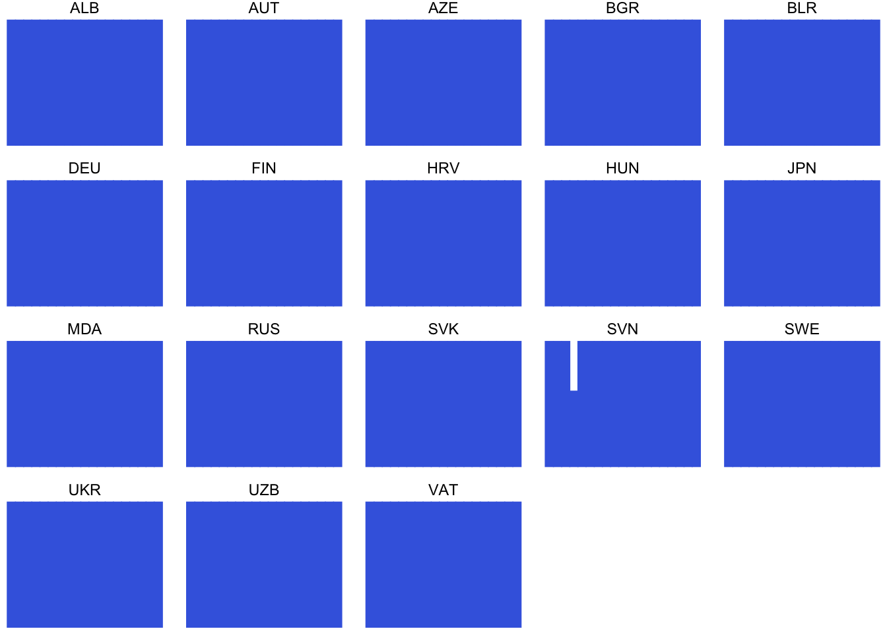

Chapter 6 From base R to dplyr
From base to tidyverse style
相較於R base的較為傳統的R編程風格，tidyverse style的R programming具有以下幾個特點：
基於tidy data理念：tidyverse style的R programming基於tidy data理念，即資料應該以規律的方式組織，以方便分析和視覺化。tidyverse style的R程式庫提供了一些工具和函數，用於處理和轉換tidy data格式的資料，如dplyr、tidyr等。
使用管道操作符：tidyverse style的R programming通常使用管道操作符（%>%），將資料通過多個函數連接起來，形成一個清晰和易於理解的資料處理流程。使用管道操作符可以簡化程式碼並提高程式的可讀性。
強調函數庫的一致性：tidyverse style的R programming強調函數庫之間的一致性，即不同函數庫之間使用相似的函數名稱、參數名稱和返回值等，以方便使用者的學習和使用。
使用簡潔的命名方式：tidyverse style的R programming通常使用簡潔和易於理解的變數和函數命名方式，例如使用動詞表示操作，使用名詞表示資料，以方便使用者理解程式碼的含義。
提供高級的視覺化工具：tidyverse style的R programming提供了一些高級的視覺化工具，如ggplot2、gganimate等，可以幫助使用者更加輕鬆地進行資料視覺化和探索。
6.1 dplyr
dplyr是一個tidyverse風格的R程式庫，用於對資料進行快速、一致、直觀的操作和轉換。dplyr提供了一些高效能的函數和工具，如filter、select、mutate、group_by和summarize等，用於對資料進行選擇、篩選、轉換、分組和摘要等操作。
以下是dplyr常用的函數：
filter：用於選擇符合特定條件的資料列。select：用於選擇特定的欄位。mutate：用於新增或修改欄位。group_by：用於按照特定欄位進行分組。summarize：用於對分組後的資料進行摘要統計。arrange：用於按照欄位的特定順序進行排序。
dplyr具有以下優點：
簡潔而直觀的語法：dplyr的函數名稱和語法都十分簡潔而直觀，易於使用和理解，尤其對於新手來說更加友好。
高效的運行速度：dplyr的設計考慮了資料處理的效率，使用C++實現了部分函數，因此dplyr在處理大型資料集時運行速度較快。
與tidyverse相容：dplyr與其他tidyverse程式庫，如ggplot2和tidyr，可以很好地相容，並且能夠與其他常用的R程式庫進行集成，提供更加全面和高效的資料分析和可視化工具。
6.2 Taipie Theft Count (base to dplyr)
library(tidyverse)
# options(stringsAsFactors = F) # default options in R ver.> 4.06.2.1 Reading data
# Read by read_csv()
# Will raise error
# Error in make.names(x) : invalid multibyte string at '<bd>s<b8><b9>'
# df <- read_csv("data/tp_theft.csv")
# read_csv() with locale = locale(encoding = "Big5")
library(readr)
df <- read_csv("data/臺北市住宅竊盜點位資訊-UTF8-BOM-1.csv")6.2.2 Cleaning data I
- Renaming variables by
select() - Generating variable year
- Generating variable month
- Retrieving area
library(stringr)
selected_df <- df %>%
select(id = 編號,
cat = 案類,
date = `發生日期`,
time = `發生時段`,
location = `發生地點`) %>%
mutate(year = date %/% 10000) %>%
mutate(month = date %/% 100 %% 100) %>%
mutate(area = str_sub(location, 4, 6)) %>%
mutate(county = str_sub(location, 1, 3))6.2.3 Cleaning data II
- Filtering out irrelevant data records
# readr::guess_encoding("data/tp_theft.csv")
filtered_df <- selected_df %>%
# count(year) %>% View
filter(county == "臺北市") %>%
filter(year >= 104) %>%
# count(time) %>% View
# count(location) %>%
filter(!area %in% c("中和市", "板橋市"))6.2.4 Long to wide form
count()two variablespivot_wider()spread one variable as columns to wide form
# count() then pivot_wider()
df.wide <- filtered_df %>%
count(time, area) %>%
pivot_wider(names_from = area, values_from = n, values_fill = 0)
??pivot_wider6.2.5 Setting time as row.name for mosaicplot
row.names(df.wide) <- df.wide$time
df.wide$time <- NULL# Specify fonts for Chinese
# par(family=('STKaiti'))
par(family=('Heiti TC Light')) # for mac
# Specify colors
colors <- c('#D0104C', '#DB4D6D', '#E83015', '#F75C2F',
'#E79460', '#E98B2A', '#9B6E23', '#F7C242',
'#BEC23F', '#90B44B', '#66BAB7', '#1E88A8')
# mosaicplot()
mosaicplot(df.wide, color=colors, border=0, off = 3,
main="Theft rate of Taipei city (region by hour)")
6.2.6 Clean version
library(readr)
# options(stringsAsFactors = F)
df <- read_csv("data/臺北市住宅竊盜點位資訊-UTF8-BOM-1.csv")
selected_df <- df %>%
select(id = 編號,
cat = 案類,
date = `發生日期`,
time = `發生時段`,
location = `發生地點`) %>%
mutate(year = date %/% 10000) %>%
mutate(month = date %/% 100 %% 100) %>%
mutate(area = stringr::str_sub(location, 4, 6)) %>%
mutate(county = stringr::str_sub(location, 1, 3))
selected_df %>% count(year)## # A tibble: 9 × 2
## year n
## <dbl> <int>
## 1 103 1
## 2 104 687
## 3 105 663
## 4 106 560
## 5 107 501
## 6 108 411
## 7 109 304
## 8 110 189
## 9 111 31selected_df %>% count(time) %>% head(10)## # A tibble: 10 × 2
## time n
## <chr> <int>
## 1 00~02 272
## 2 02~04 214
## 3 03~05 8
## 4 04~06 156
## 5 05~07 23
## 6 06~08 191
## 7 08~10 305
## 8 09~11 6
## 9 10~12 338
## 10 11~03 1selected_df %>% arrange(time) %>% head(10)## # A tibble: 10 × 9
## id cat date time location year month area county
## <dbl> <chr> <dbl> <chr> <chr> <dbl> <dbl> <chr> <chr>
## 1 2 住宅竊盜 1040101 00~02 臺北市文山區萬美里萬寧… 104 1 文山… 臺北市
## 2 3 住宅竊盜 1040101 00~02 臺北市信義區富台里忠孝… 104 1 信義… 臺北市
## 3 6 住宅竊盜 1040102 00~02 臺北市士林區天福里1鄰… 104 1 士林… 臺北市
## 4 12 住宅竊盜 1040105 00~02 臺北市中山區南京東路3… 104 1 中山… 臺北市
## 5 33 住宅竊盜 1040115 00~02 臺北市松山區饒河街181~… 104 1 松山… 臺北市
## 6 74 住宅竊盜 1040131 00~02 臺北市南港區重陽路57巷… 104 1 南港… 臺北市
## 7 75 住宅竊盜 1040201 00~02 臺北市北投區中心里中和… 104 2 北投… 臺北市
## 8 92 住宅竊盜 1040210 00~02 臺北市北投區大同路200… 104 2 北投… 臺北市
## 9 95 住宅竊盜 1040212 00~02 臺北市萬華區萬大路493… 104 2 萬華… 臺北市
## 10 106 住宅竊盜 1040216 00~02 臺北市信義區吳興街269… 104 2 信義… 臺北市filtered_df <- selected_df %>%
# count(year) %>% View
filter(year >= 104) %>%
filter(!time %in% c("03~05", "05~07", "09~11", "11~13", "15~17", "17~19", "18~21", "21~23", "23~01"))
# count(time) %>% View
# count(location) %>%
# filter(!area %in% c("中和市", "板橋市"))
df.wide <- filtered_df %>%
count(time, area) %>%
pivot_wider(names_from = area, values_from = n, values_fill = 0) %>%
as.data.frame()
row.names(df.wide) <- df.wide$time
df.wide$time <- NULL
par(family=('Heiti TC Light')) # for mac
# Specify colors
colors <- c('#D0104C', '#DB4D6D', '#E83015', '#F75C2F',
'#E79460', '#E98B2A', '#9B6E23', '#F7C242',
'#BEC23F', '#90B44B', '#66BAB7', '#1E88A8')
# mosaicplot()
mosaicplot(df.wide, color=colors, border=0, off = 3,
main="Theft rate of Taipei city (region by hour)") 
6.3 Paid Maternity Leave (base to dplyr)
library(tidyverse)
options(stringsAsFactors = F)
options(scipen = 999)
library(readxl)
read_excel("data/WORLD-MACHE_Gender_6.8.15.xls", "Sheet1", col_names=T) %>%
select(iso3, 6:24) %>%
filter(matleave_13 == 5, matleave_95 == 5) %>%
gather("year", "degree", 2:20) %>%
# spread(year, degree, fill = 0) %>% View
replace_na(list(degree = 0)) %>%
mutate(year2 = as.POSIXct(strptime(year, "matleave_%y"))) %>%
mutate(year3 = lubridate::year(year2)) %>%
ggplot() +
aes(year3, degree) +
geom_col(color = "royalblue", fill = "royalblue") +
facet_wrap(~ iso3) +
theme_void()